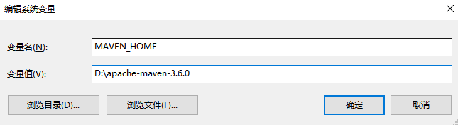
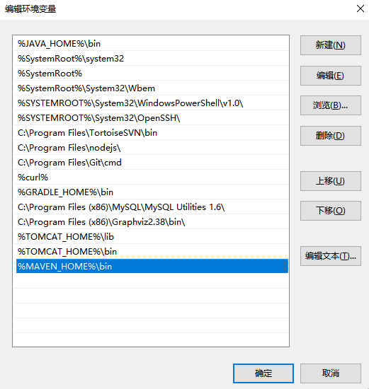
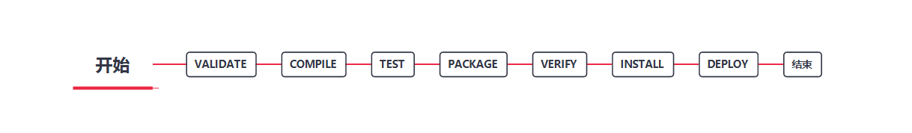

前言
简介
功能（这些功能先记着，等理解了来补上说明）
- 构建项目
- 文档生成
- 报告
- 依赖管理
- 发布
- 分发
- 邮件列表
- SCMs
- 分发
约定大于配置
Maven提倡用一个共同的标准目录结构，使用约定大于配置的原则
| 目录 |
作用 |
| ${basedir} |
存放pom.xml和所有的子目录 |
| ${basedir}/src/main/java |
项目的java源代码 |
| ${basedir}/src/main/resources |
项目的资源，比如说property文件，springmvc.xml |
| ${basedir}/src/test/java |
项目的测试类，比如说Junit代码 |
| ${basedir}/src/test/resources |
测试用的资源 |
| ${basedir}/src/main/webapp/WEB-INF |
web应用文件目录，web项目的信息，比如存放web.xml、本地图片、jsp视图页面 |
| ${basedir}/target |
打包输出目录 |
| ${basedir}/target/classes |
编译输出目录 |
| ${basedir}/target/test-classes |
测试编译输出目录 |
| Test.java |
Maven只会自动运行符合该命名规则的测试类 |
| ~/.m2/repository |
Maven默认的本地仓库目录位置 |
特点
- 基于模型的构建：Maven能够将任意数量的项目构建到预定义的输出类型中，如JAR、WAR或基于项目元数据的分发，而不需要在大多数情况下执行任何脚本。
- 项目信息的一致性站点：使用与构建过程相同的元数据，Maven能够生成一个网站或PDF，包括您要添加的任何文档，并添加到关于项目开发状态的标准报告中。
- 发布管理和发布单独的输出：Maven将不需要额外的配置，就可以与源代码管理系统（如git）集成，并可以基于某个标签管理项目的发布。它也可以将其发布到分发位置供其他项目使用。Maven能够发布单独的输出，如JAR，包含其他依赖和文档的归档，或者作为源代码发布。
- 子项目使用父项目依赖时，正常情况子项目应该继承父项目依赖，无需使用版本号。
- 更好的错误报告：Maven改进了错误报告，它为您提供了Maven wiki页面的链接。
环境配置
Java要求
Maven 3.2需要JDK1.6或以上
Maven 3.3需要JDK1.7或以上
环境变量
Windows
- 新建系统变量MAVEN_HOME

- 将MAVEN_HOME添加到path中

Linux
- 下载解压
1
| tar zxvf apache-maven-3.6.0.tar.gz
|
- 添加到环境变量，编辑/etc/profile，添加如下内容。
1
2
| export MAVEN_HOME=/usr/local/maven
export PATH=${PATH}:${MAVEN_HOME}/bin
|
- 保存文件，使配置生效
- 控制台输入命令查看安装是否成功
POM文件
即Project Object Model，项目对象模型，是一个XML文件，用于描述项目如何构建，声明项目依赖，等等。
执行任务或目标时，Maven会在当前目录中查找POM，获取所有的配置信息，然后执行目标。
POM中可以指定以下配置：
- 项目依赖
- 插件
- 执行目标
- 项目构建profile
- 项目版本
- 项目开发者列表
- 相关邮件列表信息
文件内容
1
2
3
4
5
6
7
8
9
10
11
12
13
14
15
16
| <project xmlns = "http://maven.apache.org/POM/4.0.0"
xmlns:xsi = "http://www.w3.org/2001/XMLSchema-instance"
xsi:schemaLocation = "http://maven.apache.org/POM/4.0.0
http://maven.apache.org/xsd/maven-4.0.0.xsd">
<modelVersion>4.0.0</modelVersion>
<groupId>com.companyname.project-group</groupId>
<artifactId>project</artifactId>
<version>1.0</version>
</project>
|
文件解析
| 节点 |
描述 |
| project |
工程的根标签。 |
| modelVersion |
模型版本需要设置为 4.0。 |
| groupId |
这是工程组的标识。它在一个组织或者项目中通常是唯一的。例如，一个银行组织 com.companyname.project-group 拥有所有的和银行相关的项目。 |
| artifactId |
这是工程的标识。它通常是工程的名称。例如，消费者银行。groupId 和 artifactId 一起定义了 artifact 在仓库中的位置。 |
| version |
这是工程的版本号。在 artifact 的仓库中，它用来区分不同的版本。例如： |
父（Super）POM
父POM时Maven默认的POM。所有的POM都继承自一个父POM。父POM包含了一些可以被继承的默认设置。因此，当Maven发现需要下载POM中的依赖时，它会到父POM中配置的默认仓库http://repo1.maven.org/maven2去下载。
使用以下命令来查看父POM默认配置：
POM标签大全详解
1
2
3
4
5
6
7
8
9
10
11
12
13
14
15
16
17
18
19
20
21
22
23
24
25
26
27
28
29
30
31
32
33
34
35
36
37
38
39
40
41
42
43
44
45
46
47
48
49
50
51
52
53
54
55
56
57
58
59
60
61
62
63
64
65
66
67
68
69
70
71
72
73
74
75
76
77
78
79
80
81
82
83
84
85
86
87
88
89
90
91
92
93
94
95
96
97
98
99
100
101
102
103
104
105
106
107
108
109
110
111
112
113
114
115
116
117
118
119
120
121
122
123
124
125
126
127
128
129
130
131
132
133
134
135
136
137
138
139
140
141
142
143
144
145
146
147
148
149
150
151
152
153
154
155
156
157
158
159
160
161
162
163
164
165
166
167
168
169
170
171
172
173
174
175
176
177
178
179
180
181
182
183
184
185
186
187
188
189
190
191
192
193
194
195
196
197
198
199
200
201
202
203
204
205
206
207
208
209
210
211
212
213
214
215
216
217
218
219
220
221
222
223
224
225
226
227
228
229
230
231
232
233
234
235
236
237
238
239
240
241
242
243
244
245
246
247
248
249
250
251
252
253
254
255
256
257
258
259
260
261
262
263
264
265
266
267
268
269
270
271
272
273
274
275
276
277
278
279
280
281
282
283
284
285
286
287
288
289
290
291
292
293
294
295
296
297
298
299
300
301
302
303
304
305
306
307
308
309
310
311
312
313
314
315
316
317
318
319
320
321
322
323
324
325
326
327
328
329
330
331
332
333
334
335
336
337
338
339
340
341
342
343
344
345
346
347
348
349
350
351
352
353
354
355
356
357
358
359
360
361
362
363
364
365
366
367
368
369
370
371
372
373
374
375
376
377
378
379
380
381
382
383
384
385
386
387
388
389
390
391
392
393
394
395
396
397
398
399
400
401
402
403
404
405
406
407
408
409
410
411
412
413
414
415
416
417
418
419
420
421
422
423
424
425
426
427
428
429
430
431
432
433
434
435
436
437
438
439
440
441
442
443
444
445
446
447
448
449
450
451
452
453
454
455
456
457
458
459
460
461
462
463
464
465
466
467
468
469
470
471
472
473
474
475
476
477
478
479
480
481
482
483
484
485
486
487
488
489
490
491
492
493
494
495
496
497
498
499
500
501
502
503
504
505
506
507
508
509
510
511
512
513
514
515
516
517
518
519
520
521
522
523
524
525
526
527
528
529
530
531
532
533
534
535
536
537
538
539
540
541
542
543
544
545
546
547
548
549
550
551
552
553
554
555
556
557
558
559
560
561
562
563
564
565
566
567
568
569
570
571
572
573
574
575
576
577
578
579
580
581
582
583
584
585
586
587
588
589
590
591
592
593
594
595
596
597
598
599
600
601
602
603
604
605
606
607
608
609
610
611
612
613
614
615
616
617
618
619
620
621
622
623
624
625
626
627
628
629
630
631
632
633
634
635
636
637
638
639
640
641
642
643
644
645
646
647
648
649
650
651
652
653
654
655
656
657
658
659
660
661
662
663
664
665
| <project xmlns="http://maven.apache.org/POM/4.0.0" xmlns:xsi="http://www.w3.org/2001/XMLSchema-instance"
xsi:schemaLocation="http://maven.apache.org/POM/4.0.0http://maven.apache.org/maven-v4_0_0.xsd">
<parent>
<artifactId />
<groupId />
<version />
<relativePath />
</parent>
<modelVersion>4.0.0</modelVersion>
<groupId>asia.banseon</groupId>
<artifactId>banseon-maven2</artifactId>
<packaging>jar</packaging>
<version>1.0-SNAPSHOT</version>
<name>banseon-maven</name>
<url>http://www.baidu.com/banseon</url>
<description>A maven project to study maven.</description>
<prerequisites>
<maven />
</prerequisites>
<issueManagement>
<system>jira</system>
<url>http://jira.baidu.com/banseon</url>
</issueManagement>
<ciManagement>
<system />
<url />
<notifiers>
<notifier>
<type />
<sendOnError />
<sendOnFailure />
<sendOnSuccess />
<sendOnWarning />
<address />
<configuration />
</notifier>
</notifiers>
</ciManagement>
<inceptionYear />
<mailingLists>
<mailingList>
<name>Demo</name>
<post>banseon@126.com</post>
<subscribe>banseon@126.com</subscribe>
<unsubscribe>banseon@126.com</unsubscribe>
<archive>http:/hi.baidu.com/banseon/demo/dev/</archive>
</mailingList>
</mailingLists>
<developers>
<developer>
<id>HELLO WORLD</id>
<name>banseon</name>
<email>banseon@126.com</email>
<url />
<roles>
<role>Project Manager</role>
<role>Architect</role>
</roles>
<organization>demo</organization>
<organizationUrl>http://hi.baidu.com/banseon</organizationUrl>
<properties>
<dept>No</dept>
</properties>
<timezone>-5</timezone>
</developer>
</developers>
<contributors>
<contributor>
<name />
<email />
<url />
<organization />
<organizationUrl />
<roles />
<timezone />
<properties />
</contributor>
</contributors>
<licenses>
<license>
<name>Apache 2</name>
<url>http://www.baidu.com/banseon/LICENSE-2.0.txt</url>
<distribution>repo</distribution>
<comments>A business-friendly OSS license</comments>
</license>
</licenses>
<scm>
<connection>
scm:svn:http://svn.baidu.com/banseon/maven/banseon/banseon-maven2-trunk(dao-trunk)
</connection>
<developerConnection>
scm:svn:http://svn.baidu.com/banseon/maven/banseon/dao-trunk
</developerConnection>
<tag />
<url>http://svn.baidu.com/banseon</url>
</scm>
<organization>
<name>demo</name>
<url>http://www.baidu.com/banseon</url>
</organization>
<build>
<sourceDirectory />
<scriptSourceDirectory />
<testSourceDirectory />
<outputDirectory />
<testOutputDirectory />
<extensions>
<extension>
<groupId />
<artifactId />
<version />
</extension>
</extensions>
<defaultGoal />
<resources>
<resource>
<targetPath />
<filtering />
<directory />
<includes />
<excludes />
</resource>
</resources>
<testResources>
<testResource>
<targetPath />
<filtering />
<directory />
<includes />
<excludes />
</testResource>
</testResources>
<directory />
<finalName />
<filters />
<pluginManagement>
<plugins>
<plugin>
<groupId />
<artifactId />
<version />
<extensions />
<executions>
<execution>
<id />
<phase />
<goals />
<inherited />
<configuration />
</execution>
</executions>
<dependencies>
<dependency>
......
</dependency>
</dependencies>
<inherited />
<configuration />
</plugin>
</plugins>
</pluginManagement>
<plugins>
<plugin>
<groupId />
<artifactId />
<version />
<extensions />
<executions>
<execution>
<id />
<phase />
<goals />
<inherited />
<configuration />
</execution>
</executions>
<dependencies>
<dependency>
......
</dependency>
</dependencies>
<goals />
<inherited />
<configuration />
</plugin>
</plugins>
</build>
<profiles>
<profile>
<id />
<activation>
<activeByDefault />
<jdk />
<os>
<name>Windows XP</name>
<family>Windows</family>
<arch>x86</arch>
<version>5.1.2600</version>
</os>
<property>
<name>mavenVersion</name>
<value>2.0.3</value>
</property>
<file>
<exists>/usr/local/hudson/hudson-home/jobs/maven-guide-zh-to-production/workspace/
</exists>
<missing>/usr/local/hudson/hudson-home/jobs/maven-guide-zh-to-production/workspace/
</missing>
</file>
</activation>
<build>
<defaultGoal />
<resources>
<resource>
<targetPath />
<filtering />
<directory />
<includes />
<excludes />
</resource>
</resources>
<testResources>
<testResource>
<targetPath />
<filtering />
<directory />
<includes />
<excludes />
</testResource>
</testResources>
<directory />
<finalName />
<filters />
<pluginManagement>
<plugins>
<plugin>
<groupId />
<artifactId />
<version />
<extensions />
<executions>
<execution>
<id />
<phase />
<goals />
<inherited />
<configuration />
</execution>
</executions>
<dependencies>
<dependency>
......
</dependency>
</dependencies>
<goals />
<inherited />
<configuration />
</plugin>
</plugins>
</pluginManagement>
<plugins>
<plugin>
<groupId />
<artifactId />
<version />
<extensions />
<executions>
<execution>
<id />
<phase />
<goals />
<inherited />
<configuration />
</execution>
</executions>
<dependencies>
<dependency>
......
</dependency>
</dependencies>
<goals />
<inherited />
<configuration />
</plugin>
</plugins>
</build>
<modules />
<repositories>
<repository>
<releases>
<enabled />
<updatePolicy />
<checksumPolicy />
</releases>
<snapshots>
<enabled />
<updatePolicy />
<checksumPolicy />
</snapshots>
<id />
<name />
<url />
<layout />
</repository>
</repositories>
<pluginRepositories>
<pluginRepository>
<releases>
<enabled />
<updatePolicy />
<checksumPolicy />
</releases>
<snapshots>
<enabled />
<updatePolicy />
<checksumPolicy />
</snapshots>
<id />
<name />
<url />
<layout />
</pluginRepository>
</pluginRepositories>
<dependencies>
<dependency>
......
</dependency>
</dependencies>
<reports />
<reporting>
......
</reporting>
<dependencyManagement>
<dependencies>
<dependency>
......
</dependency>
</dependencies>
</dependencyManagement>
<distributionManagement>
......
</distributionManagement>
<properties />
</profile>
</profiles>
<modules />
<repositories>
<repository>
<releases>
<enabled />
<updatePolicy />
<checksumPolicy />
</releases>
<snapshots>
<enabled />
<updatePolicy />
<checksumPolicy />
</snapshots>
<id>banseon-repository-proxy</id>
<name>banseon-repository-proxy</name>
<url>http://192.168.1.169:9999/repository/</url>
<layout>default</layout>
</repository>
</repositories>
<pluginRepositories>
<pluginRepository>
......
</pluginRepository>
</pluginRepositories>
<dependencies>
<dependency>
<groupId>org.apache.maven</groupId>
<artifactId>maven-artifact</artifactId>
<version>3.8.1</version>
<type>jar</type>
<classifier></classifier>
<scope>test</scope>
<systemPath></systemPath>
<exclusions>
<exclusion>
<artifactId>spring-core</artifactId>
<groupId>org.springframework</groupId>
</exclusion>
</exclusions>
<optional>true</optional>
</dependency>
</dependencies>
<reports></reports>
<reporting>
<excludeDefaults />
<outputDirectory />
<plugins>
<plugin>
<groupId />
<artifactId />
<version />
<inherited />
<configuration />
<reportSets>
<reportSet>
<id />
<configuration />
<inherited />
<reports />
</reportSet>
</reportSets>
</plugin>
</plugins>
</reporting>
<dependencyManagement>
<dependencies>
<dependency>
......
</dependency>
</dependencies>
</dependencyManagement>
<distributionManagement>
<repository>
<uniqueVersion />
<id>banseon-maven2</id>
<name>banseon maven2</name>
<url>file://${basedir}/target/deploy</url>
<layout />
</repository>
<snapshotRepository>
<uniqueVersion />
<id>banseon-maven2</id>
<name>Banseon-maven2 Snapshot Repository</name>
<url>scp://svn.baidu.com/banseon:/usr/local/maven-snapshot</url>
<layout />
</snapshotRepository>
<site>
<id>banseon-site</id>
<name>business api website</name>
<url>
scp://svn.baidu.com/banseon:/var/www/localhost/banseon-web
</url>
</site>
<downloadUrl />
<relocation>
<groupId />
<artifactId />
<version />
<message />
</relocation>
<status />
</distributionManagement>
<properties />
</project>
|
Maven构建生命周期
Maven构建生命周期定义了一个项目构建和发布的过程。
一个典型的Maven构建生命周期由以下几个阶段组成：

| 阶段 |
处理 |
描述 |
| 验证 validate |
验证项目 |
验证项目是否正确且所有必须信息是可用的 |
| 编译 compile |
执行编译 |
源代码编译在此阶段完成 |
| 测试 Test |
测试 |
使用适当的单元测试框架（例如JUnit）运行测试。 |
| 包装 package |
打包 |
创建JAR/WAR包如在 pom.xml 中定义提及的包 |
| 检查 verify |
检查 |
对集成测试的结果进行检查，以保证质量达标 |
| 安装 install |
安装 |
安装打包的项目到本地仓库，以供其他项目使用 |
| 部署 deploy |
部署 |
拷贝最终的工程包到远程仓库中，以共享给其他开发人员和工程 |
Clean生命周期
当执行mvn post-clean命令时，Maven调用clean生命周期，它包含以下阶段：
- pre-clean：执行一些要在clean之前完成的工作
- clean：移除所有上一次构建生成的文件
- post-clean：执行一些需要在clean之后立刻完成的工作
mvn clean命令执行的是pre-clean, clean
mvn post-clean命令执行的是pre-clean, clean, post-clean
一个例子：将maven-antrun-plugin:run目标添加到pre-clean、clean和post-clean阶段中，这样我们可以在clean生命周期的各个阶段显示文本信息。
POM文件内容：
1
2
3
4
5
6
7
8
9
10
11
12
13
14
15
16
17
18
19
20
21
22
23
24
25
26
27
28
29
30
31
32
33
34
35
36
37
38
39
40
41
42
43
44
45
46
47
48
49
50
51
52
53
54
55
56
| <project xmlns="http://maven.apache.org/POM/4.0.0"
xmlns:xsi="http://www.w3.org/2001/XMLSchema-instance"
xsi:schemaLocation="http://maven.apache.org/POM/4.0.0
http://maven.apache.org/xsd/maven-4.0.0.xsd">
<modelVersion>4.0.0</modelVersion>
<groupId>com.companyname.projectgroup</groupId>
<artifactId>project</artifactId>
<version>1.0</version>
<build>
<plugins>
<plugin>
<groupId>org.apache.maven.plugins</groupId>
<artifactId>maven-antrun-plugin</artifactId>
<version>1.1</version>
<executions>
<execution>
<id>id.pre-clean</id>
<phase>pre-clean</phase>
<goals>
<goal>run</goal>
</goals>
<configuration>
<tasks>
<echo>pre-clean phase</echo>
</tasks>
</configuration>
</execution>
<execution>
<id>id.clean</id>
<phase>clean</phase>
<goals>
<goal>run</goal>
</goals>
<configuration>
<tasks>
<echo>clean phase</echo>
</tasks>
</configuration>
</execution>
<execution>
<id>id.post-clean</id>
<phase>post-clean</phase>
<goals>
<goal>run</goal>
</goals>
<configuration>
<tasks>
<echo>post-clean phase</echo>
</tasks>
</configuration>
</execution>
</executions>
</plugin>
</plugins>
</build>
</project>
|
- 新建一个pom.xml文件，将上面的内容复制进去
- 运行mvn post-clean命令
- 查看执行结果：
1
2
3
4
5
6
7
8
9
10
11
12
13
14
15
16
17
18
19
20
21
22
23
24
25
26
27
28
| [INFO] Scanning for projects...
[INFO]
[INFO] ----------------< com.companyname.projectgroup:project >----------------
[INFO] Building project 1.0
[INFO] --------------------------------[ jar ]---------------------------------
[INFO]
[INFO] --- maven-antrun-plugin:1.1:run (id.pre-clean) @ project ---
[INFO] Executing tasks
[echo] pre-clean phase
[INFO] Executed tasks
[INFO]
[INFO] --- maven-clean-plugin:2.5:clean (default-clean) @ project ---
[INFO]
[INFO] --- maven-antrun-plugin:1.1:run (id.clean) @ project ---
[INFO] Executing tasks
[echo] clean phase
[INFO] Executed tasks
[INFO]
[INFO] --- maven-antrun-plugin:1.1:run (id.post-clean) @ project ---
[INFO] Executing tasks
[echo] post-clean phase
[INFO] Executed tasks
[INFO] ------------------------------------------------------------------------
[INFO] BUILD SUCCESS
[INFO] ------------------------------------------------------------------------
[INFO] Total time: 0.374 s
[INFO] Finished at: 2020-03-16T07:30:41+08:00
[INFO] ------------------------------------------------------------------------
|
Default（Build）生命周期
| 生命周期阶段 |
描述 |
| validate（校验） |
校验项目是否正确并且所有必要的信息可以完成项目的构建过程。 |
| initialize（初始化） |
初始化构建状态，比如设置属性值。 |
| generate-sources（生成源代码） |
生成包含在编译阶段中的任何源代码。 |
| process-sources（处理源代码） |
处理源代码，比如说，过滤任意值。 |
| generate-resources（生成资源文件） |
生成将会包含在项目包中的资源文件。 |
| process-resources （处理资源文件） |
复制和处理资源到目标目录，为打包阶段最好准备。 |
| compile（编译） |
编译项目的源代码。 |
| process-classes（处理类文件） |
处理编译生成的文件，比如说对Java class文件做字节码改善优化。 |
| generate-test-sources（生成测试源代码） |
生成包含在编译阶段中的任何测试源代码。 |
| process-test-sources（处理测试源代码） |
处理测试源代码，比如说，过滤任意值。 |
| generate-test-resources（生成测试资源文件） |
为测试创建资源文件。 |
| process-test-resources（处理测试资源文件） |
复制和处理测试资源到目标目录。 |
| test-compile（编译测试源码） |
编译测试源代码到测试目标目录. |
| process-test-classes（处理测试类文件） |
处理测试源码编译生成的文件。 |
| test（测试） |
使用合适的单元测试框架运行测试（Juint是其中之一）。 |
| prepare-package（准备打包） |
在实际打包之前，执行任何的必要的操作为打包做准备。 |
| package（打包） |
将编译后的代码打包成可分发格式的文件，比如JAR、WAR或者EAR文件。 |
| pre-integration-test（集成测试前） |
在执行集成测试前进行必要的动作。比如说，搭建需要的环境。 |
| integration-test（集成测试） |
处理和部署项目到可以运行集成测试环境中。 |
| post-integration-test（集成测试后） |
在执行集成测试完成后进行必要的动作。比如说，清理集成测试环境。 |
| verify （验证） |
运行任意的检查来验证项目包有效且达到质量标准。 |
| install（安装） |
安装项目包到本地仓库，这样项目包可以用作其他本地项目的依赖。 |
| deploy（部署） |
将最终的项目包复制到远程仓库中与其他开发者和项目共享。 |
当一个阶段通过Maven命令调用时，例如mvn compile，只有该阶段之前以及包括该阶段在内的所有阶段会被执行。
不同的maven目标将根据打包的类型（JAR/WAR/EAR），被绑定到不同的Maven生命周期阶段。
举个栗子：将maven-antrun-plugin:run目标添加到Build生命周期的一部分阶段中。
- 将如下内容拷贝/新建一个pom.xml
1
2
3
4
5
6
7
8
9
10
11
12
13
14
15
16
17
18
19
20
21
22
23
24
25
26
27
28
29
30
31
32
33
34
35
36
37
38
39
40
41
42
43
44
45
46
47
48
49
50
51
52
53
54
55
56
57
58
59
60
61
62
63
64
65
66
67
68
69
70
71
72
73
74
75
76
77
78
79
80
| <project xmlns="http://maven.apache.org/POM/4.0.0"
xmlns:xsi="http://www.w3.org/2001/XMLSchema-instance"
xsi:schemaLocation="http://maven.apache.org/POM/4.0.0
http://maven.apache.org/xsd/maven-4.0.0.xsd">
<modelVersion>4.0.0</modelVersion>
<groupId>com.companyname.projectgroup</groupId>
<artifactId>project</artifactId>
<version>1.0</version>
<build>
<plugins>
<plugin>
<groupId>org.apache.maven.plugins</groupId>
<artifactId>maven-antrun-plugin</artifactId>
<version>1.1</version>
<executions>
<execution>
<id>id.validate</id>
<phase>validate</phase>
<goals>
<goal>run</goal>
</goals>
<configuration>
<tasks>
<echo>validate phase</echo>
</tasks>
</configuration>
</execution>
<execution>
<id>id.compile</id>
<phase>compile</phase>
<goals>
<goal>run</goal>
</goals>
<configuration>
<tasks>
<echo>compile phase</echo>
</tasks>
</configuration>
</execution>
<execution>
<id>id.test</id>
<phase>test</phase>
<goals>
<goal>run</goal>
</goals>
<configuration>
<tasks>
<echo>test phase</echo>
</tasks>
</configuration>
</execution>
<execution>
<id>id.package</id>
<phase>package</phase>
<goals>
<goal>run</goal>
</goals>
<configuration>
<tasks>
<echo>package phase</echo>
</tasks>
</configuration>
</execution>
<execution>
<id>id.deploy</id>
<phase>deploy</phase>
<goals>
<goal>run</goal>
</goals>
<configuration>
<tasks>
<echo>deploy phase</echo>
</tasks>
</configuration>
</execution>
</executions>
</plugin>
</plugins>
</build>
</project>
|
- 运行mvn compile命令
- 查看执行结果
1
2
3
4
5
6
7
8
9
10
11
12
13
14
15
16
17
18
19
20
21
22
23
24
25
26
27
28
| [INFO] Scanning for projects...
[INFO]
[INFO] ----------------< com.companyname.projectgroup:project >----------------
[INFO] Building project 1.0
[INFO] --------------------------------[ jar ]---------------------------------
[INFO]
[INFO] --- maven-antrun-plugin:1.1:run (id.validate) @ project ---
[INFO] Executing tasks
[echo] validate phase
[INFO] Executed tasks
[INFO]
[INFO] --- maven-resources-plugin:2.6:resources (default-resources) @ project ---
[WARNING] Using platform encoding (GBK actually) to copy filtered resources, i.e. build is platform dependent!
[INFO] skip non existing resourceDirectory D:\src\main\resources
[INFO]
[INFO] --- maven-compiler-plugin:3.1:compile (default-compile) @ project ---
[INFO] No sources to compile
[INFO]
[INFO] --- maven-antrun-plugin:1.1:run (id.compile) @ project ---
[INFO] Executing tasks
[echo] compile phase
[INFO] Executed tasks
[INFO] ------------------------------------------------------------------------
[INFO] BUILD SUCCESS
[INFO] ------------------------------------------------------------------------
[INFO] Total time: 0.909 s
[INFO] Finished at: 2020-03-16T07:39:01+08:00
[INFO] ------------------------------------------------------------------------
|
命令行调用


{kind=link}
{kind=link}
{kind=link}